This codelab is part of the 2026 Agentic Architect Sprint by Google.
Agentic workflows need clear boundaries — around an agent's context, its filesystem, and the repositories it is allowed to touch. This codelab teaches that third boundary: structured multi-folder, cross-repository project context in Antigravity 2.0 — including a cloned repository you may read but must never change.
The Brunch Club RSVP Kit is a small brunch RSVP system split across five interdependent repositories you own, plus one external dependency it consumes:
Repository | Role |
| the contract every theme must satisfy ( |
|
|
| a static site that renders theme cards from the data |
|
|
|
|
| external, read-only — you clone the real open-source Open Color repo for its design tokens; you consume it but do not own it |
It works today: the frontend renders a card per theme, every theme is validated against the shared contract, and each card's accent color is a real Open Color token (for example --oc-pink-2) named in the data.
Your task sounds trivial: add one new brunch theme, "Pearl Pancake Morning." But in a multi-repo system that one change has a precise blast radius:
Touch too few repos and the tests or docs fall out of sync. Touch too many and you corrupt the contract, hand-edit a frontend that updates itself, or commit to a dependency you don't own. The hard part isn't writing the theme — it's knowing exactly which repos a change touches, which it must not, and which you are not even allowed to. An agent confined to a single folder cannot see that whole graph.
You give one agent a multi-folder Project spanning all six folders, lock the cloned dependency to read-only with a custom project configuration, send parallel report-only scout subagents to map the blast radius, then let one master agent execute exactly that map — and prove what it left untouched.
A consistent, contract-valid update to the kit after adding one theme:
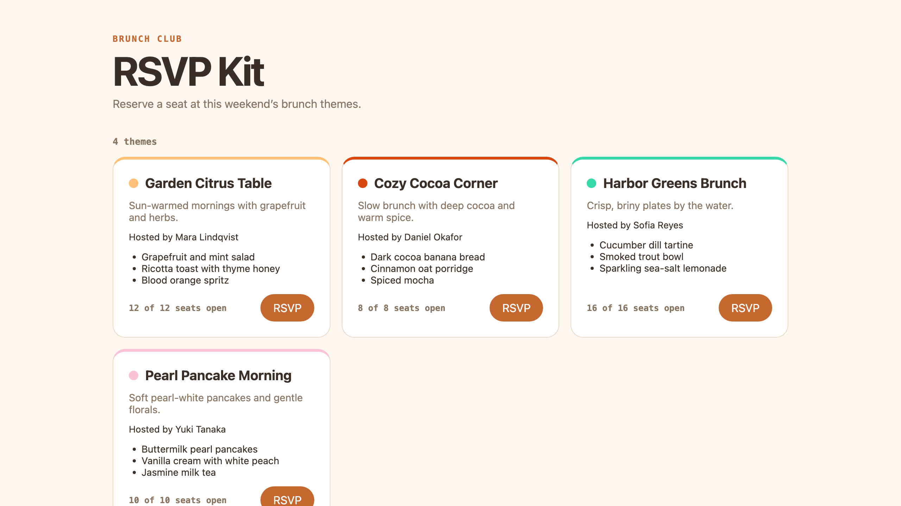
brunch-content-data gains the new theme, with an accent token read from Open Color.brunch-tests fixtures recognize it and pass.brunch-docs documents it.brunch-shared-schema and brunch-frontend are correctly left unchanged.open-color is read, never written — enforced by your project configuration.This lab uses one bounded master task and optional report-only scout subagents that do not edit files. There is no dependency installation beyond a shallow Git clone, and no duplicate single-agent run. Keep scout reports concise and stop after the contract tests pass and the new card renders.
Target duration: 35–45 minutes.
Download and install Antigravity 2.0 from:
Follow the current onboarding and sign-in flow shown by the application.
Choose the path available to you:
If you use the enterprise path, ask your administrator to complete the documented setup:
aiplatform.googleapis.com.roles/serviceusage.serviceUsageAdmin.roles/aiplatform.user.The enterprise guide documents supported Antigravity endpoints as global, eu, and us. Follow your organization's selected configuration.
Official reference: Use Antigravity with Gemini Enterprise Agent Platform
This codelab requires Node.js 20+ to run the contract tests and Python 3 to serve the static frontend.
node --version
python3 --version
The kit lives in workspace/. The five brunch-* folders are separate repositories you own. The kit also depends on Open Color — a real open-source design-tokens repo — for its accent colors; you will clone that repo into the workspace and treat it as read-only.
Pull down just the workspace/ folder with a sparse checkout:
git clone --no-checkout --depth 1 https://github.com/evanca/gde-sprint-26-multifolder-public.git
cd gde-sprint-26-multifolder-public
git sparse-checkout init --cone
git sparse-checkout set workspace
git checkout
cd workspace
The workspace/ folder holds your five sibling repos:
workspace/
├── brunch-shared-schema/ # the contract (brunch-theme.schema.json + validate.mjs)
├── brunch-content-data/ # themes.json
├── brunch-frontend/ # static site; renders cards and applies accent tokens
├── brunch-tests/ # node:test contract tests, no dependencies
└── brunch-docs/ # THEMES.md
Initialize each of your five brunch-* folders as its own disposable Git repository, so the agent maps and diffs real, independent repository boundaries:
for repo in brunch-shared-schema brunch-content-data brunch-frontend brunch-tests brunch-docs; do
( cd "$repo" && git init -q && git add . && git commit -q -m "Initial $repo" )
done
Now clone the external Open Color dependency into the workspace. This is the repo you consume but don't own — you read its tokens, you never change it:
git clone --depth 1 https://github.com/yeun/open-color
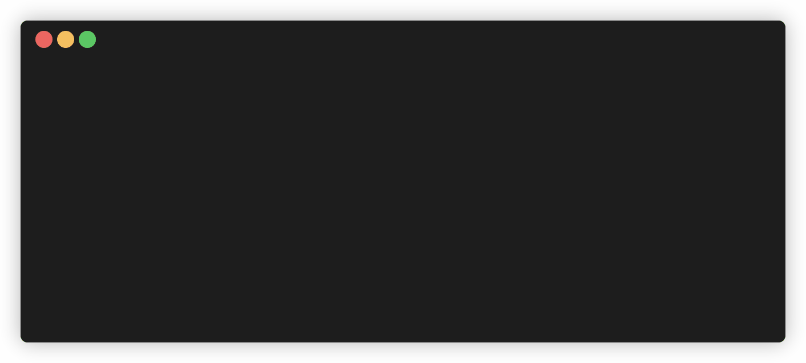
The workspace now has six folders: your five repos plus open-color. Confirm the starter is green and self-consistent before involving an agent:
cd brunch-tests
node --test
cd ..
The suite includes a check that every theme's accent is a real token defined in open-color/open-color.css — the kit genuinely depends on that cloned repo.
Antigravity agents reason within a Project. A multi-folder Project lets one agent hold all six folders — your five repos plus the cloned dependency — as a single cross-repository context instead of being limited to one folder.
+ control.workspace/ directory: the five brunch-* repos and open-color.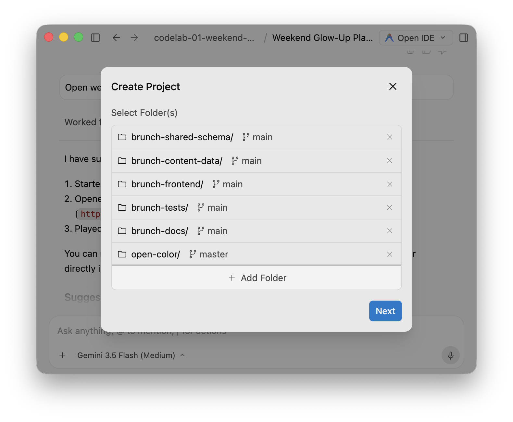
You just cloned open-color for context — but by default the agent could write to it like any other project folder, and you must never modify a repo you don't own. Make the boundary explicit with a custom project configuration.
Open Settings, select this project (brunch-club-rsvp-kit) under Projects, and configure:
open-color. Now the agent can read Open Color (to choose a valid accent token) but can never write it — the cloned dependency is locked.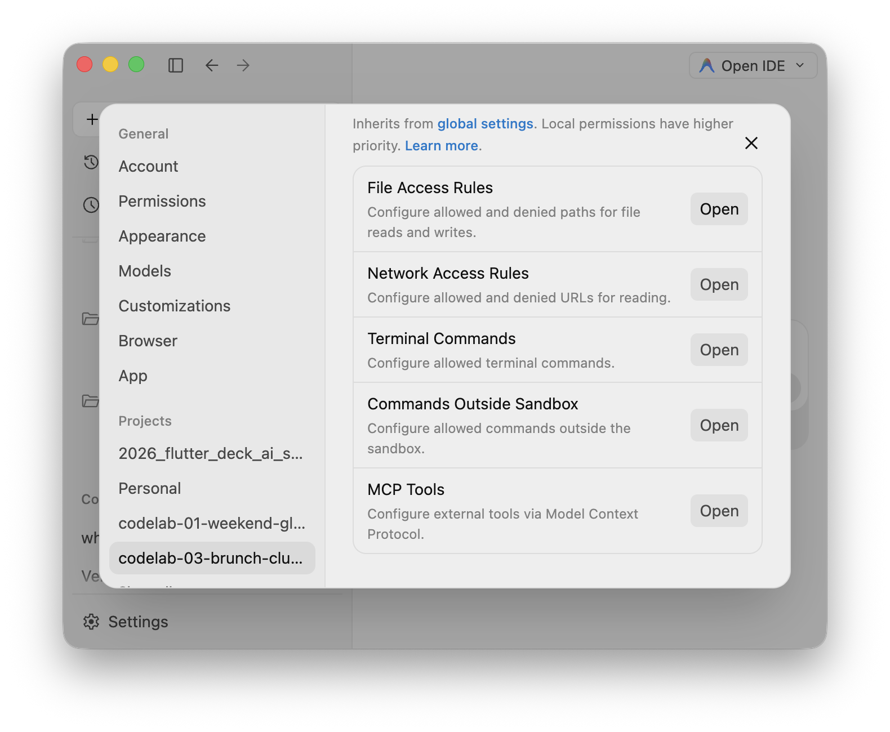
This is the lab's custom project configuration: the folder set plus a deny-write rule turns six open folders into a structured cross-repository boundary with a read-only zone the agent cannot cross.
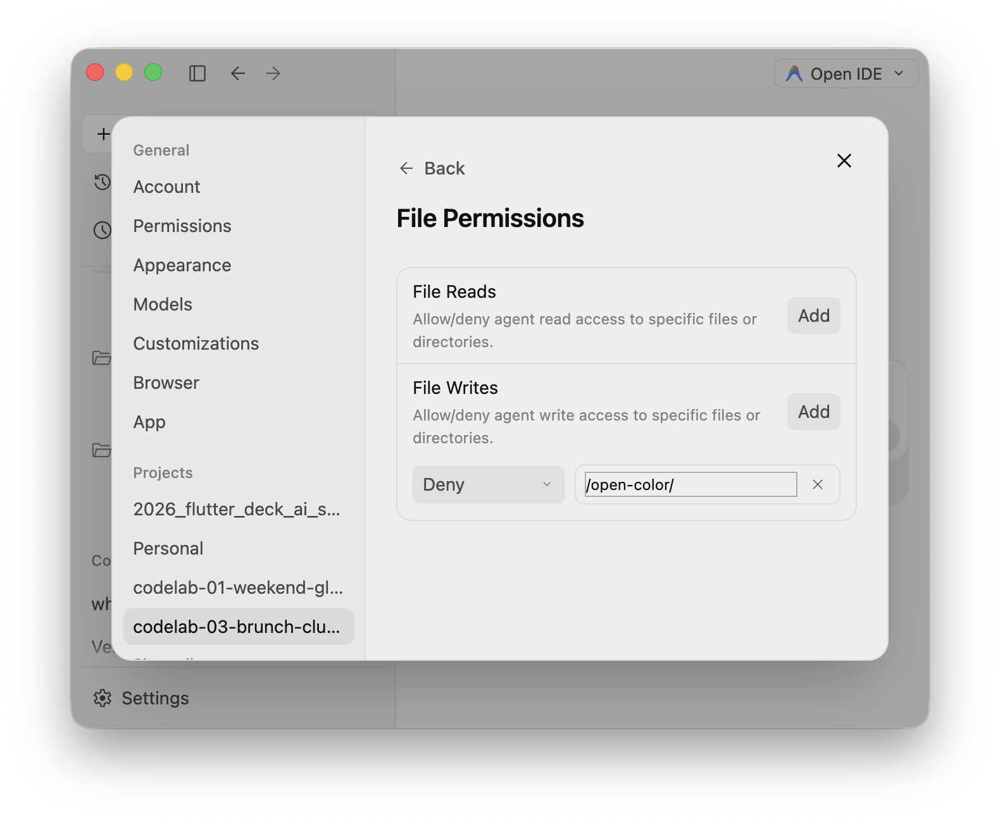
Before any edit, inspect each folder. Send the master agent this request:
We have a multi-folder project with five Brunch Club repos — brunch-shared-schema,
brunch-content-data, brunch-frontend, brunch-tests, and brunch-docs — plus one
external, read-only dependency: open-color (a cloned design-tokens repo we consume
but must not modify).
Launch one report-only scout subagent per folder and run them in parallel. Each
scout inspects only its own folder and returns at most 6 bullets covering:
- what the folder owns
- which other folders it depends on or is depended on by
- exactly what adding a new brunch theme would require here (including
"no change needed" or "read-only, must not change" with a reason)
The scouts must only report findings. They must not edit any file.
After all scouts return, produce a single cross-repo dependency map that lists,
per folder, the precise change needed to add one theme.
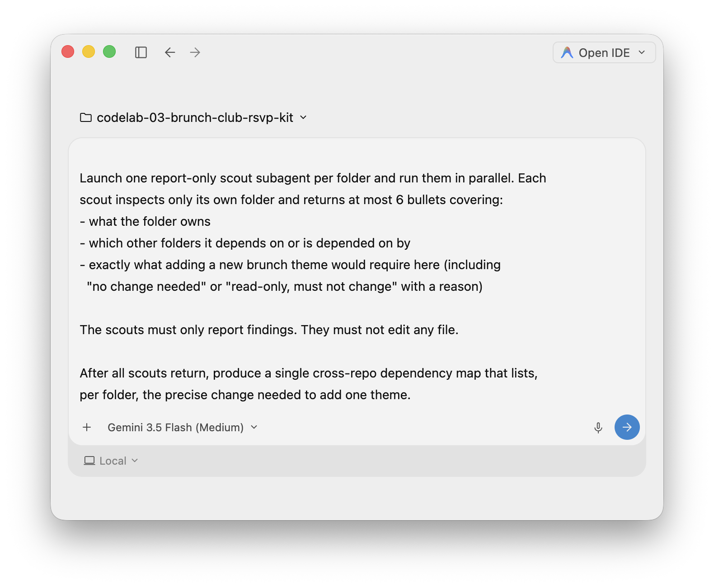
While the request runs, observe Antigravity 2.0:
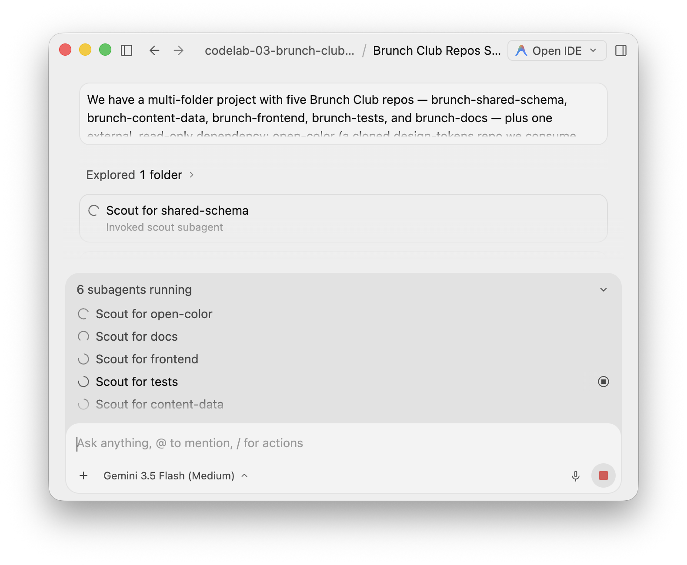
The map should conclude that open-color
is read-only (the source of accent tokens, not something to change), that brunch-shared-schema
needs no change (the contract already allows the theme), and that brunch-frontend
needs no change (it applies the accent from data automatically). The real edits land in brunch-content-data, brunch-tests, and brunch-docs.
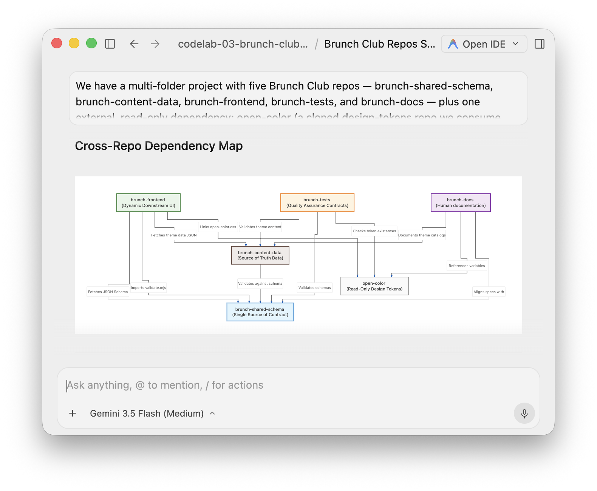
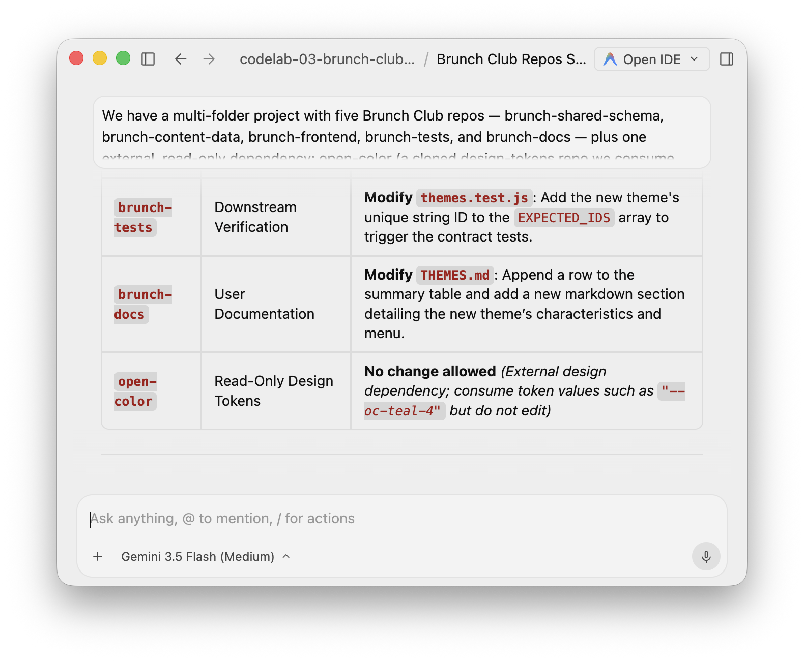
Now give the master agent the single task. It must read Open Color to pick a real accent token, and stay out of the repos it should not touch.
Using the cross-repo dependency map, add one new brunch theme across the repos
that need it. Do not edit a repo that does not need a change, and never modify
the read-only open-color dependency. For each folder, state whether you changed
it and why.
New theme:
- id: pearl-pancake-morning
- name: Pearl Pancake Morning
- tagline: Soft pearl-white pancakes and gentle florals.
- host: Yuki Tanaka
- capacity: 10
- menu: Buttermilk pearl pancakes; Vanilla cream with white peach; Jasmine milk tea
- accent: read open-color/open-color.css and choose a REAL token whose color
suits "soft pearl-white, gentle florals" (a soft pink or near-white, e.g. an
--oc-pink-* token). Do not invent a token.
Requirements:
- brunch-content-data: add the theme to themes.json so it still validates against
brunch-shared-schema/brunch-theme.schema.json, using the accent token you chose.
- brunch-tests: update fixtures so the suite recognizes the new theme, then run
`node --test` in brunch-tests until it is green.
- brunch-docs: add the theme to THEMES.md (summary table and a section), including its accent.
- brunch-shared-schema: change only if the new theme cannot be expressed by the
current contract. Explain your decision.
- brunch-frontend: change only if it does not render the theme automatically.
Confirm whether it is contract-driven before editing.
- open-color: read-only. Read it to pick the accent token; do not modify it.
Finish with a summary listing each folder, whether it changed, and the reason.
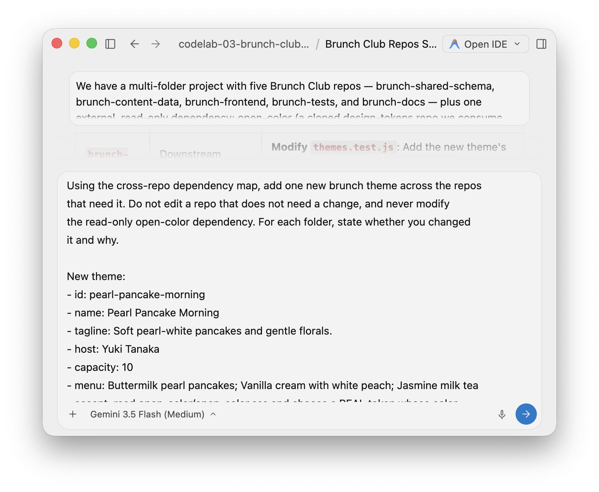
While the request runs, confirm the agent:
open-color to choose the accent token, and does not write to it.brunch-content-data, brunch-tests, and brunch-docs.brunch-shared-schema and brunch-frontend untouched, with a reason.node --test and reaches a green suite.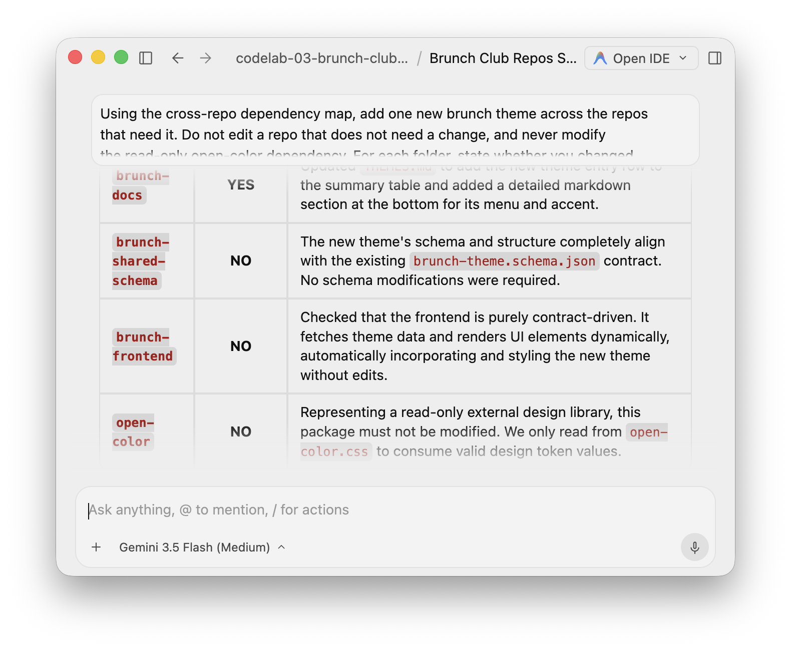
A single-folder agent would either miss the test fixture and docs, blindly edit the frontend, or invent a fake color instead of reading the real tokens — and nothing would stop it from committing to the upstream repo you cloned. Cross-repository context plus a read-only boundary lets the agent trace the shared contract, read the cloned dependency, and act only where the dependency graph allows — the essence of full-stack dependency mapping.
Confirm the change landed in exactly the right repos. Because each brunch-* folder is its own repository, inspect them one at a time. From the workspace/ root:
for repo in brunch-shared-schema brunch-content-data brunch-frontend brunch-tests brunch-docs; do
echo "== $repo =="
( cd "$repo" && git status --short )
done
Confirm that:
brunch-content-data/themes.json contains the new theme, with an accent that is a real Open Color token, and still has the required fields and no extras.brunch-tests fixtures include pearl-pancake-morning.brunch-docs/THEMES.md lists the theme in the table and as a section.brunch-shared-schema is unchanged.brunch-frontend is unchanged.open-color is unchanged — and your File Writes Deny rule would have refused any attempt to change it.Do not continue until the agent can explain why the schema, the frontend, and the cloned dependency did not change.
Run the contract tests from the workspace/ root:
cd brunch-tests
node --test
cd ..
All tests should pass, including the data-validates-against-schema check, the expected-theme-ids check, and the check that every theme's accent is a real Open Color token.
Serve the frontend from the workspace/ root so cross-folder relative paths resolve:
python3 -m http.server 8000
Open http://localhost:8000/brunch-frontend/ and verify:
If a check fails, send one narrow correction request to the master agent, then repeat only the failed check. Compare with reference/ only if needed.
You used an Antigravity 2.0 multi-folder Project to give one agent a real cross-repository view, cloned an external dependency and made it read-only with a custom project configuration, mapped full-stack dependencies with parallel scout subagents, and propagated a single change across exactly the repos that needed it — while correctly leaving the shared contract and contract-driven frontend untouched and never modifying the cloned upstream repo.
You learned:
That completes this sprint's set of agent boundaries: context, filesystem, and now cross-repository scope — one agent across many repos, with the judgment to change only what a task needs.